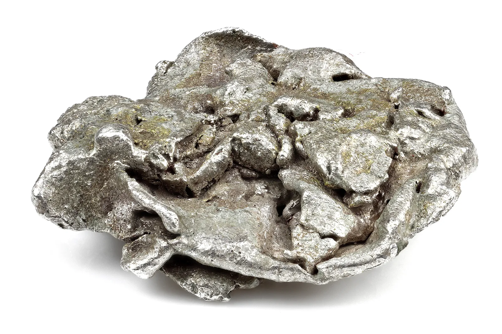

Research
- üî¨Transition-Metal Catalysts ‚Äì Electrocatalytic EG Oxidation
Hongjing Wu et‚ÄØal. (2025) reviewed strategies using Fe, Co, Ni, Pt, Pd-based catalysts for the electrocatalytic oxidation of ethylene glycol (EG). This process is essential for recycling PET plastic waste. Enhanced efficiency and selectivity were achieved via innovative catalyst design and advanced analysis of reaction pathways‚ÄØ:contentReference[oaicite:1]{index=1}.
Follow link - üî¨TM‚ÄëN‚ÄìC Catalysts ‚Äì Oxygen Reduction for Fuel Cells
Wei‑Wei Zhao et al. (2025) summarized recent advances in transition‑metal–N–C catalysts that rival platinum for ORR in fuel cells and metal–air batteries. They focused on tuning metal–nitrogen coordination to maximize activity and durability—pivotal for sustainable energy :contentReference[oaicite:2]{index=2}.
Follow link - üî¨TMP Catalysts ‚Äì Zinc‚ÄëAir Battery Performance
A recent review (2025) highlighted Fe, Co, Ni phosphide (TMP) catalysts for zinc-air batteries. These offer bifunctional ORR/OER efficiency and stability—bringing rechargeable zinc-air systems closer to commercialization :contentReference[oaicite:3]{index=3}.
Follow link - üî¨Tungsten Heavy Alloys ‚Äì Aerospace & Defense
A 2024/25 review in Journal of Materials Engineering & Performance detailed W–Ni–Fe/Cu tungsten-heavy alloys used in aerospace, defense, medical, and energy sectors. Additive manufacturing and spark‑plasma sintering techniques now enable tailored microstructures for high-performance applications :contentReference[oaicite:4]{index=4}.
Follow link
Key Characteristics
Sc
- Silvery-white, soft, and lightweight
- Used in aerospace alloys and lights
- Typically forms Sc³⁺ ions
Ti
- Strong, lightweight, corrosion-resistant
- Used in aircrafts and medical implants
- Common oxidation state: +4
V
- Hard, silvery-grey metal
- Used in steel alloys and catalysts
- Exhibits multiple oxidation states
Cr
- Shiny, corrosion-resistant metal
- Main element in stainless steel
- Known for colorful compounds
Mn
- Hard and brittle silvery metal
- Vital in steelmaking
- Multiple oxidation states from +2 to +7
Fe
- Most used metal on Earth
- Essential for hemoglobin
- Common in construction and tools
Co
- Magnetic and shiny metal
- Used in rechargeable batteries
- Important for vitamin B12
Ni
- Corrosion-resistant and hard
- Used in coins and batteries
- Key component in stainless steel
Cu
- Excellent conductor of electricity
- Used in wiring and plumbing
- Forms colorful compounds

Y
- Used in superconductors, LEDs, and phosphors
- Often found in rare earth minerals
- Improves strength of alloys
Zr
- Highly resistant to corrosion
- Used in nuclear reactors due to low neutron absorption
- Also used in dental ceramics
Nb
- Known for superconducting properties
- Used in high-strength steel alloys
- Corrosion-resistant and biocompatible

Mo
- Used in steel alloys for strength and heat resistance
- Essential trace element in biology
- Has a high melting point (~2623°C)
Tc
- First artificially produced element
- Radioactive, used in medical imaging
- No stable isotopes
Ru
- Used in electronics and as a catalyst
- Hard and resistant to corrosion
- One of the rarest metals on Earth
Rh
- Extremely rare and valuable
- Used in catalytic converters
- Highly reflective and corrosion-resistant
Pd
- Used in catalytic converters and electronics
- Absorbs hydrogen efficiently
- Important in hydrogen purification

Ag
- Best electrical conductor of all elements
- Used in electronics, jewelry, and photography
- Has antimicrobial properties

Hf
- Very high melting point (~2506°C)
- Excellent corrosion resistance
- Used in control rods of nuclear reactors
Ta
- Highly resistant to corrosion and heat
- Used in capacitors and surgical implants
- Rare, but very stable chemically
W
- Highest melting point of all metals (~3422°C)
- Used in filaments, X-ray tubes, and heavy alloys
- Also called Tungsten
Re
- Extremely rare and dense metal
- Used in jet engines and catalysts
- Very high melting point (~3186°C)
Os
- Densest naturally occurring element
- Used in fountain pen tips and electrical contacts
- Extremely hard and brittle
Ir
- Very dense and corrosion-resistant
- Used in spark plugs, crucibles, and spacecraft parts
- One of the most stable elements
Pt
- Valuable, dense, and highly unreactive
- Used in catalytic converters and jewelry
- Excellent electrical conductivity
Au
- Highly malleable and ductile
- Excellent conductor of electricity
- Used in electronics, dentistry, and as currency
Rf
- Rutherfordium is a synthetic element
- Highly radioactive and short-lived
- Primarily used for scientific research
Db
- Dubnium is a synthetic element
- No stable isotopes, highly radioactive
- Only used in particle physics experiments
Sg
- Seaborgium is a synthetic element
- Named after Glenn T. Seaborg
- Exists only in laboratory settings
Bh
- Bohrium is a synthetic and radioactive element
- Named in honor of Niels Bohr
- Little is known due to short half-life
Hs
- Hassium is a synthetic heavy element
- Has no stable isotopes
- Studied mainly in nuclear research labs
Mt
- Meitnerium is a synthetic and unstable element
- Named after physicist Lise Meitner
- No known practical uses—used in research
Ds
- Darmstadtium is a synthetic element
- Extremely short half-life
- Discovered in Darmstadt, Germany
Rg
- Roentgenium is highly unstable
- Named in honor of Wilhelm Röntgen (X-ray discoverer)
- No commercial uses—only synthesized in labs
Real Life Uses
H
Fuel Cells:
Hydrogen fuel cells generate electricity by combining hydrogen and oxygen with water as the only byproduct.
Used in: Hydrogen-powered vehicles, spacecraft, backup power systems.
C
Activated Carbon Filters:
Carbon is used in the form of activated charcoal for filtering impurities in air and water.
Used in: Water purifiers, gas masks, air conditioners, medical detox.
N
Fertilizers:
Nitrogen is a key component in ammonia (NH₃) and nitrates used in fertilizers to promote plant growth.
Used in: Agriculture, urea production, crop yield enhancement.
O
Medical Oxygen Therapy:
Pure oxygen is used for patients with respiratory conditions and during surgeries.
Used in: Hospitals, ICUs, oxygen concentrators, space missions.
F
Fluoride in Dental Care:
Fluorine compounds (fluorides) help prevent tooth decay by strengthening enamel.
Used in: Toothpastes, mouthwashes, municipal water fluoridation.
P
Fertilizers:
Phosphorus is a key nutrient in plant growth and is widely used in phosphate fertilizers.
Used in: Superphosphate, NPK fertilizers, soil supplements.
S
Sulfuric Acid Production:
Sulfur is used to produce H₂SO₄, one of the most industrially important chemicals.
Used in: Battery acid, fertilizers, cleaning agents, petroleum refining.
Cl
Water Disinfection:
Chlorine is widely used to disinfect drinking water and swimming pools, killing harmful microbes.
Used in: Municipal water treatment, pool maintenance, bleach production.
Br
Flame Retardants:
Bromine compounds are used in fireproofing materials, especially in plastics and electronics.
Used in: Furniture foams, electronics casings, textiles.
I
Medical Disinfectant & Supplements:
Iodine is crucial in thyroid health and used as an antiseptic in medical settings.
Used in: Betadine solution, iodized salt, thyroid treatments.